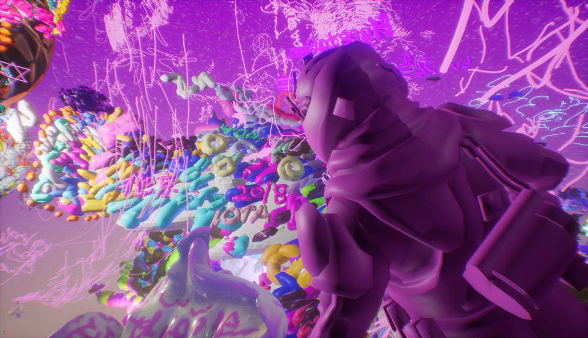
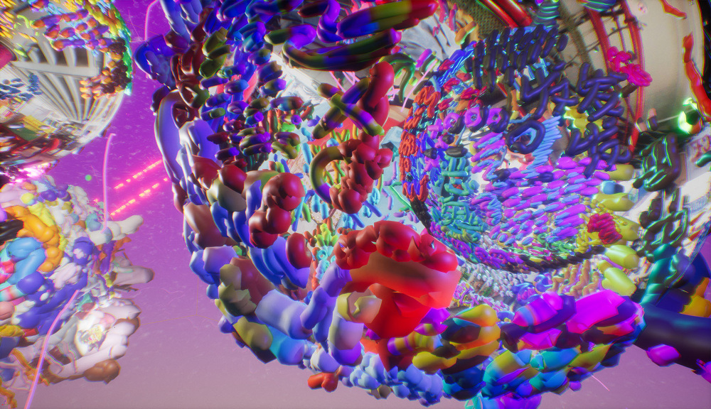
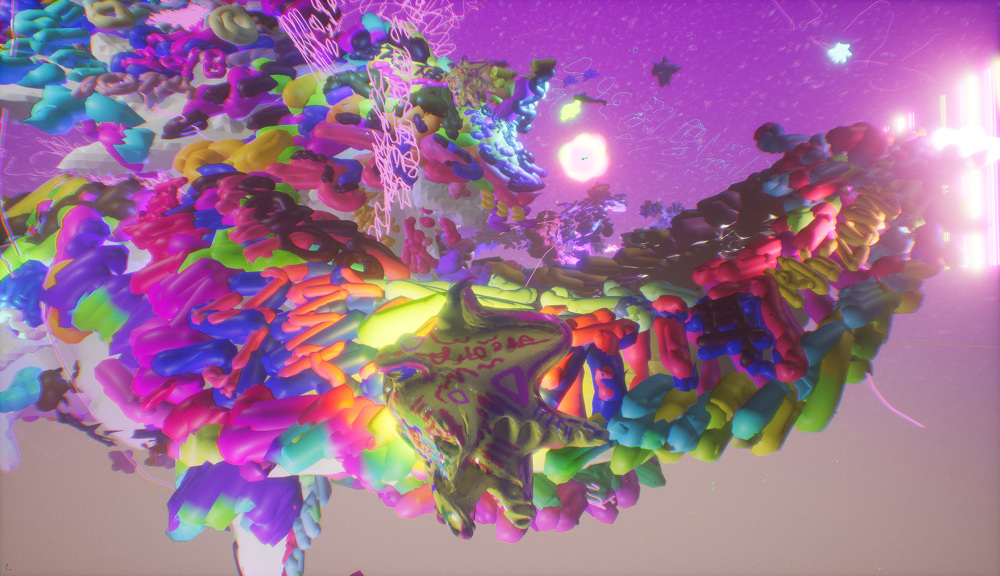

Hyperbation: AA Zoo School Map，游戏截图，倫敦，2018
Hyperbation: AA Zoo School Map，游戏截图，倫敦，2018
建築聯盟動物園學院 / AA ZOO SCHOOL
我們特別邀請各位玩家參加於建築聯盟學院（Architectural Association）2018年畢業典禮中進行的空間藝術實驗 駭人聽聞 Hyperbation: AA Zoo School 。
這是一場介於物理空間與虛擬空間的交互測試，它將把超鏈接化，超遊戲化以及超本地化的新興思考推向極致。
經過對建築聯盟學院長久以來以狂放不羈聞名的檔案的特別研究以及重新解讀，從前建築聯盟學院校長 Alvin Boyarsky 在1978年騎大象環繞貝德福德廣場（Bedford Square）開始，駭人聽聞 Hyperbation: AA Zoo School 將重新創造 超級材料（Hyper Material）於虛擬貝德福德廣場中，並與畢業典禮以及畢業展（Projects Review）並置，將在6月22日下午4點開始進行一場狂放不羈的實驗遊戲。
我們具有少量 特別通行證，可允許玩家提前進入貝德福德廣場進行內測。如若有興趣，詳情請入群了解。
遊戲說明：
一級玩家（持有智能手機）技能：使用貝德福德廣場內的圖騰符文。
二級玩家（持有iPhone 6s及以上和iPad五代及以上）技能：使用貝德福德廣場內的特別應用程序（屆時可在App Store下載）。
三級玩家（得到Oculus Go NPC）技能：使用貝德福德廣場內的全景實驗視頻。
四級玩家（得到Oculus Rift NPC）技能：使用貝德福德廣場內的虛幻引擎VR遊戲。
All guests to the AA Graduation Ceremony are invited to participate in Hyperbation: AA Zoo School, a mixed reality (MR) architectural extravaganza.
Hyperbation: AA Zoo School is an architectural experiment located between physical and digital space, which expands the notions of hyperisation, gamification and hyperlocalisation. Following in a long tradition of wildly extravagant performance and carnival at the AA – typified by former School Director Alvin Boyarsky riding around Bedford Square on an Elephant in 1978 – AA Zoo School takes material from the AA’s Archive, collides it with a cast of virtual characters and will juxtapose multiple environments with the live events of the AA Graduation Ceremony and Projects Review, 22nd June 2018.
Follow the new hyper-AA-Elephant and enter the AA Zoo School.
*Player Level 1 (Android Phone and iPhone) Ability: Accessing Tracker
*Player Level 2 (iPhone 6S & above or iPad 5th Generation & above) Ability: Accessing APP
*Player Level 3 (Oculus Go) Ability: Accessing virtual reality (VR) 360-degree Video
*Player Level 4 (Oculus Rift) Ability: Accessing virtual reality (VR) Game
空間遊戲開發文檔 / Spatial Game Design Document / 試玩遊戲 / Play Game
Hyperbation: AA Zoo School Gameplay Trailer，視頻，倫敦，2018（備用鏈接：av26360223）
Hyperbation Live Preview，視頻，倫敦，2018（備用鏈接：av26443557）
Hyperbation Character Preview，視頻，倫敦，2018（備用鏈接：av26502675）
 Hyperbation: AA Zoo School Gameplay 1，游戏截图，倫敦，2018
Hyperbation: AA Zoo School Gameplay 1，游戏截图，倫敦，2018
Hyperbation: AA Zoo School Gameplay 2，游戏截图，倫敦，2018
Hyperbation: AA Zoo School Gameplay 3，游戏截图，倫敦，2018
Hyperbation: AA Zoo School Gameplay 4，游戏截图，倫敦，2018
Hyperbation: Hyper Body Headset，三維模型，倫敦，2018
Hyperbation: Hyper Elepahnt，三維模型，倫敦，2018
（某些影像作品需要翻墙 / Some hyperlinks might not work in certain countries）